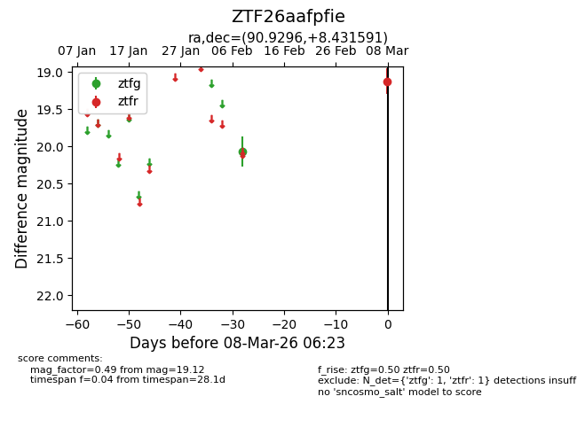
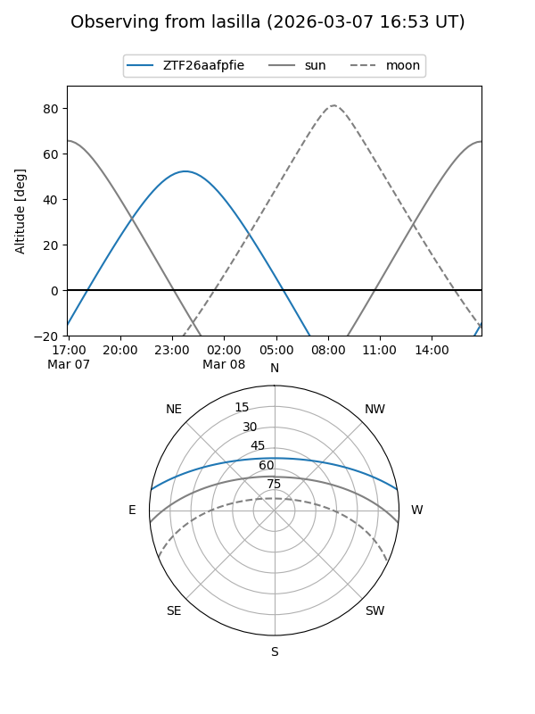
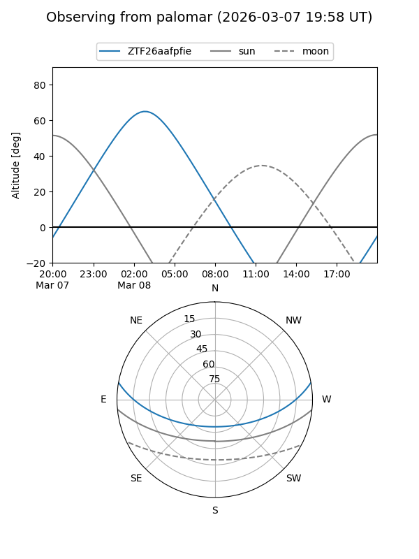

ZTF26aafpfie
Target ZTF26aafpfie at 2026-03-08 06:24
Aliases and brokers:
FINK: link
Lasair: link
ALeRCE: link
alt names
ZTF26aafpfie (ztf,fink_ztf)
Coordinates:
equatorial (ra, dec) = 90.9296,+8.43159
equatorial (HMS+DMS) = 06:03:43.09,+08:25:53.73
galactic (l, b) = (199.9152,-6.61085)
Flags:
Photometry:
last ztfg=20.07, ztfr=19.12
1 ztfg, 1 ztfr detections
Lightcurve

Visibility


Additional plots